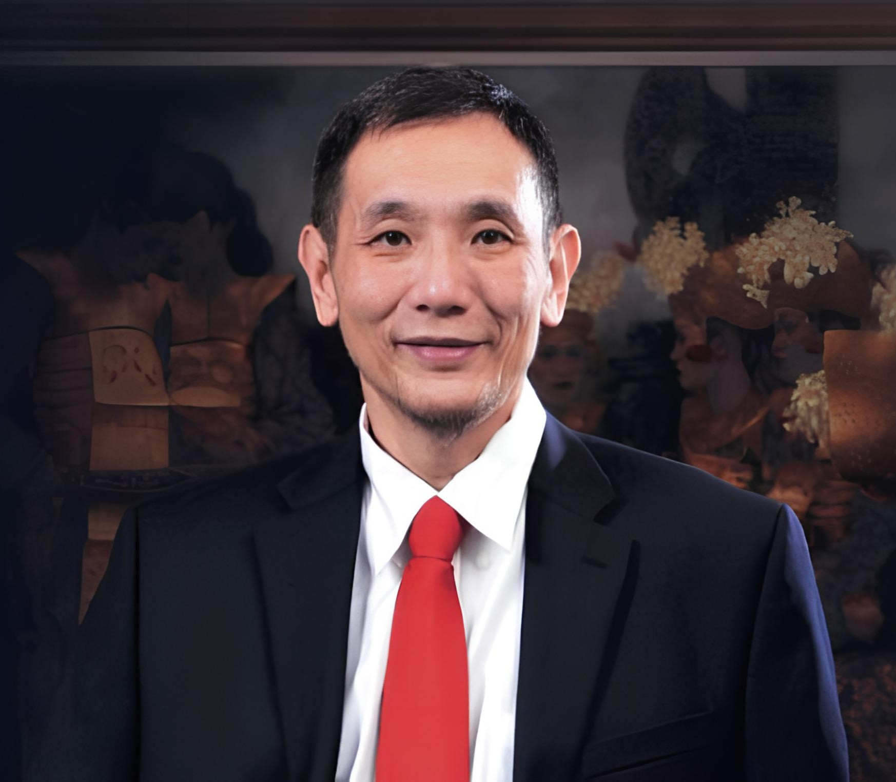

Administrasi Negara
Universitas Jayabaya
Sempat ditempuh, namun berhenti karena memilih belajar dari pengalaman nyata.

Pengusaha infrastruktur dan tokoh sosial yang membangun kariernya dari nol tanpa gelar sarjana.
Yusuf Hamka atau yang akrab disapa Babah Alun, merupakan pengusaha, politikus, dan motivator Muslim-Tionghoa.
Tumbuh dari keluarga sederhana sebagai anak keempat dari tujuh bersaudara, ia memulai perjalanan hidupnya sebagai pedagang asongan sejak berusia 10 tahun.
Kini, Yusuf Hamka dikenal sebagai pemegang saham sekaligus pengendali dari PT Citra Marga Nusaphala Persada Tbk (CMNP), sebuah perusahaan yang bergerak di bidang pengoperasian dan pembangunan jalan tol.
Baginya, gelar sarjana bukanlah segalanya, ia meyakini bahwa proses belajar, berpikir, dan memahami dari pengalaman nyata jauh lebih berharga.
Universitas Jayabaya
Sempat ditempuh, namun berhenti karena memilih belajar dari pengalaman nyata.
Columbia College
Sempat ditempuh, namun berhenti karena memilih belajar dari pengalaman nyata.
Universitas Trisakti
Sempat ditempuh, namun berhenti karena memilih belajar dari pengalaman nyata.
Universitas 17 Agustus 1945
Sempat ditempuh, namun berhenti karena memilih belajar dari pengalaman nyata.
SMA Negeri di Pasar Baru
Berhasil menamatkan pendidikan menengah atas, menjadi jenjang pendidikan formal terakhir yang ia selesaikan secara tuntas
SMP Negeri 64 Pasar Baru
Menyelesaikan jenjang pendidikan menengah pertama sebagai bekal awal sebelum melanjutkan ke tingkat berikutnya.
Kementerian Koordinator Bidang Perekonomian RI
Memberikan dukungan dan masukan kepada Menteri Koordinator Bidang Perekonomian dalam bidang sosial dan kesejahteraan masyarakat.
Pengurus Besar Nahdlatul Ulama
Menjadi bagian dari kepengurusan PBNU untuk masa khidmah 2022–2027.
Kementerian Sosial RI
Membantu Menteri Sosial dalam pelaksanaan tugas pemerintahan dan kegiatan sosial.
PT Citra Margatama Surabaya
Terlibat dalam kepemimpinan perusahaan pengelola jalan tol.
PT Citra Marga Nusaphala Persada (CMNP)
Terlibat dalam pengelolaan perusahaan dan pembangunan infrastruktur jalan tol.
PT Indomobil Sukses Internasional Tbk
Menjalankan fungsi pengawasan sebagai komisaris independen.
PT Citra Marga Nusaphala Persada (CMNP)
Mulai masuk ke jajaran komisaris perusahaan jalan tol
Proyek Konstruksi Jalan
Bekerja di proyek pembangunan jalan di tengah hutan